第 7 章
フィーチャ（スイープ・ロフト・コイル・パターンなど）
この章では、曲がった形やくり返しの形を作るフィーチャを説明します。スイープ・ロフト・コイル・ヘリカル曲線・ねじ・矩形状パターン・円形状パターン・スケッチ駆動パターン・ミラーの作り方、フォームの欄の意味、失敗したときの直し方がわかります。押し出し・穴・フィレットなどの基本のフィーチャと、プレビュー・ハンドル・HUD の共通の操作は第 6 章です。
| 節 | コマンド |
|---|---|
| スイープ | ［スイープ］ |
| ロフト | ［ロフト］ |
| コイル | ［コイル］ |
| ヘリカル曲線 | ［ヘリカル曲線］ |
| ねじ | ［ねじ］ |
| パターン | ［矩形状パターン］・［円形状パターン］・［スケッチ駆動パターン］ |
| ミラー | ［ミラー］ |
失敗の理由は、作成・編集の途中は「プレビュー: 」で始まります（第 6 章）。各節の「よくある失敗」の表は、「プレビュー: 」を除いた文を挙げています。
7.1 スイープ
プロファイル（断面）を、パスに沿って動かして、ソリッドを作ります。パイプ・ケーブル・レールなどの曲がった棒を作れます。パスには、スケッチの曲線の連なりか、らせんなどのエッジを使います。
パスのスケッチと、断面のスケッチを描きます。断面は、パスの始点に、パスに垂直な平面で描きます（第 5 章の作業平面を使います）。
リボンの［3D モデル］タブ → ［作成］パネル → ［スイープ］をクリックします。ビューで断面の領域をクリックします。［プロファイル］に入ります。
［パスの元］を選びます。［スケッチの曲線］は、スケッチの曲線を［パス］に選びます。続けてクリックして、つながる曲線を順に足します。［エッジ］は、ボディのエッジやヘリカル曲線を［パスのエッジ］に選びます。
［向き］・［テーパー角］・［ねじれ角］を決めます（次の節）。
［ブール演算］を選び、［OK］で確定します。

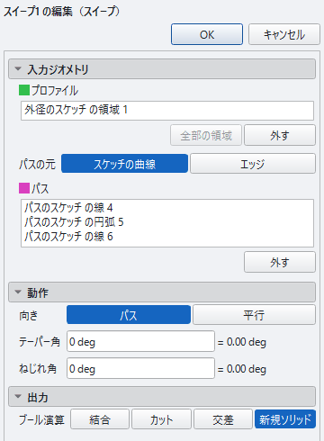

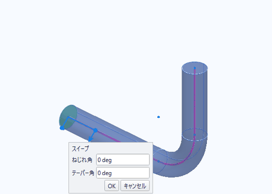

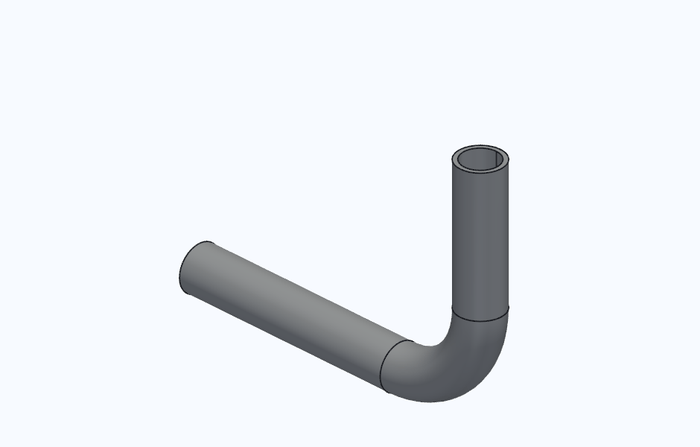
pipe_sweep.mcad）。外径の円を掃引してから、内径の円でカットして、肉厚 2 mm にしています。向き・テーパー・ねじれ
| 欄 | 意味 |
|---|---|
| ［向き］ | ［パス］は、断面をパスに対する角度のまま保って動かします。［平行］は、断面を回さずに平行に動かすだけです。パスが断面と平行になる部分では、体積ができません。 |
| ［テーパー角］ | 正の角度にすると、断面がパスに沿って広がります。断面全体を拡大・縮小します。 |
| ［ねじれ角］ | 断面がパスの全長にわたって、パスのまわりに回る角度です。 |
パスに鋭い角があるときは、ねじれ角を使えません。パスの角を丸めます。

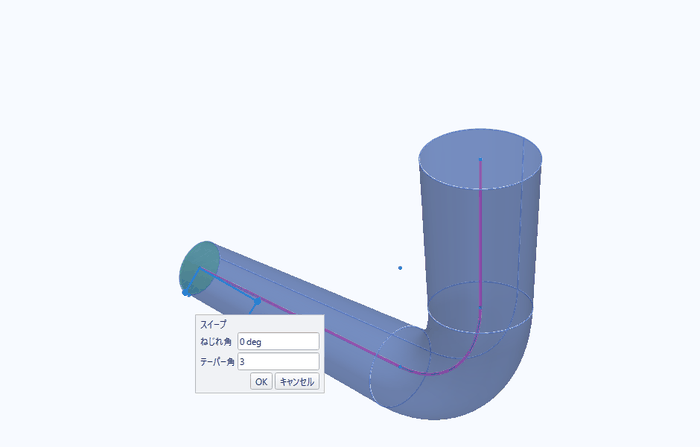
エッジをパスにする
［パスの元］を［エッジ］にすると、ボディのエッジを順にクリックして、パスにできます。ヘリカル曲線のエッジも選べます。らせんのばねや、板の縁に沿った帯を作るときに使います。

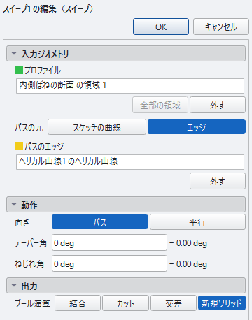

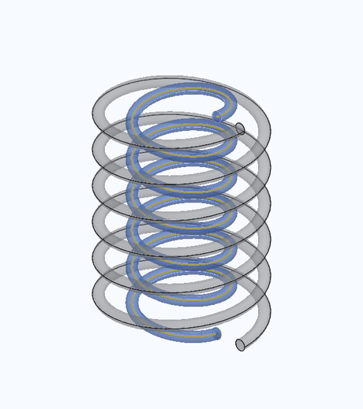
よくある失敗と直し方
| 表示される文 | 原因と直し方 |
|---|---|
| スイープが自分と交差しています: パスの全長の 60.3 % の位置で、断面がパスの曲げの半径より大きくなっています | 曲げの半径が断面の半径より小さく、折れています。曲げの半径を大きくするか、断面を小さくします。 |
| スイープが自分と交差しています: パスの全長の … % と … % の部分が … mm しか離れておらず、断面の大きさ（… mm）より近くなっています | パスの離れた部分が、断面の大きさより近づいています。パスの間隔を広げます。 |
| ねじれのあるスイープには、鋭い角のないパスが必要です。パスの角を丸めてください | ねじれ角を 0° にするか、パスの角を丸めます。 |
| テーパーのため、パスの終わりより前に断面が消えてしまいます | ［テーパー角］を小さくします。89° 未満にします。 |

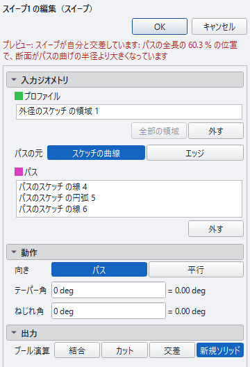
pipe_sweep.mcad）。上に理由が赤く出ます。7.2 ロフト
2 つ以上の断面を、順につないで、ソリッドを作ります。角ダクトから丸ダクトへの継ぎ手のように、形が変わっていく部品を作れます。
断面になるスケッチを、別々の平面（作業平面など）に描きます。
リボンの［3D モデル］タブ → ［作成］パネル → ［ロフト］をクリックします。
ビューで、断面の領域を、つなぎたい順にクリックします。［断面］の一覧に、選んだ順に並びます。もう一度クリックすると外れます。続けて選べます。
［動作］の欄を決めます（次の節）。
［ブール演算］を選び、［OK］で確定します。

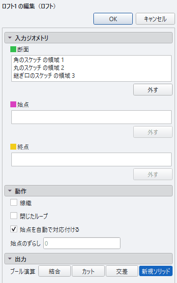

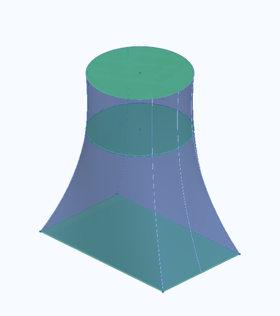
線織・閉じたループ・始点の対応
| 欄 | 意味 |
|---|---|
| ［線織］ | 断面どうしを、滑らかな曲面ではなく直線でつなぎます。チェックを外すと（既定）、断面を通る滑らかな曲面になります。 |
| ［閉じたループ］ | 最後の断面から最初の断面へ戻って、輪の形につなぎます。断面が 3 つ以上のときに使えます。 |
| ［始点を自動で対応付ける］ | ねじれが最小になるように、断面の始点を対応付けます（既定）。チェックを外すと、手で対応付けます。 |
| ［始点のずらし］ | 手で対応付けるときに使います。k 番目の断面の始点を、この数のエッジ分の k 倍だけずらします。 |

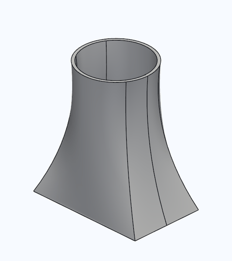

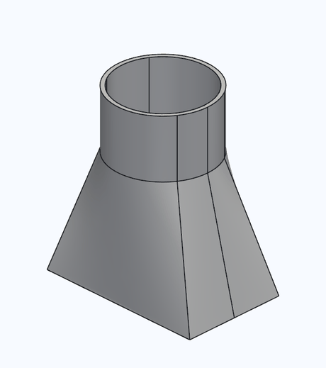
断面の数が違う（角は 4 辺、丸は 1 辺）ロフトは、自動の対応付けのままにします。手で対応付けるときは、断面のエッジの数をそろえます。断面に穴（内側の輪郭）を含められません。
点で終わるロフト
［始点］・［終点］に作業点や頂点を選ぶと、ロフトの端が 1 点に絞られます。最後の断面の先に、その点へ向かって閉じる形ができます。［閉じたループ］のときは、終点を指定できません。
点は、ロフトより前のフィーチャでなければ選べません。ロフトのあとに作った作業点を［終点］に選ぶと、「参照ジオメトリ 点1 が使えません」となります。そこで、パーツの終端（ロールバック）を戻して、ロフトより前に点を作ります。題材 loft_transition.mcad で試す手順です。
ブラウザで［ロフト2］（内側をくり抜くカット）を右クリックして、［抑制］を選びます。
最後の断面のスケッチ［継ぎ口のスケッチ］を右クリックして、［ここまでロールバック］を選びます。ブラウザの［パーツの終端］が［継ぎ口のスケッチ］の直後（［ロフト1］の前）に移り、それより後ろは計算されなくなります。
リボンの［3D モデル］タブ → ［作業フィーチャ］パネル → ［作業点］の▼ → ［固定点］で、先端にしたい位置（例: Z = 120 mm）に作業点を作ります（第 5 章）。新しい作業点は、［ロフト1］より前に入ります。
［パーツの終端］を右クリックして、［パーツの終端を最後へ移動］を選びます。後ろのフィーチャが計算されるようになります。
［ロフト1］をダブルクリックし、［終点］の欄に作業点を選びます。先が尖った形になります。
［ロフト2］を抑制しないままにすると、点へ向かう外形に内側の曲面が合わず、壁が切れて別のボディになります。


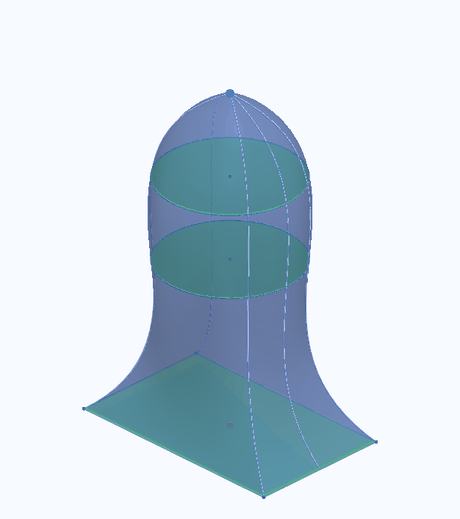
よくある失敗と直し方
| 表示される文 | 原因と直し方 |
|---|---|
| 始点を手動で対応付けるときは、断面のエッジの数をそろえてください | 断面のエッジの数が違います。［始点を自動で対応付ける］に戻します。 |
| ロフトには 2 つ以上の断面が必要です | 断面を 2 つ以上選びます。 |
| ロフトの 2 つの断面が同じ位置にあります | 断面の平面の位置をずらします。 |
| ロフトの断面に穴を含めることはできません | 内側の輪郭をスケッチから除きます。 |
| 閉じたループのロフトが自分と交差しています: … | 断面が一直線に並んでいます。断面を輪になるように置くか、［閉じたループ］を外します。 |

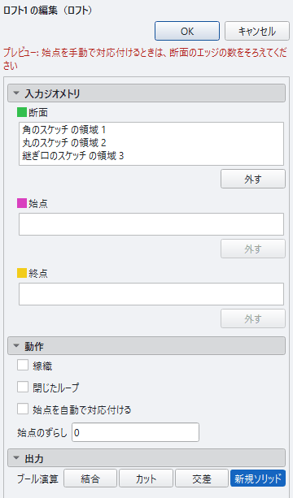
loft_transition.mcad）。断面のエッジの数が違うため、理由が赤く出ます。7.3 コイル
断面を、軸のまわりにらせん状に掃引して、ばねやねじ山のような形を作ります。
軸を含む平面（例: XZ 平面）に、ばねの線材の断面（円）を、軸から離して描きます。
リボンの［3D モデル］タブ → ［作成］パネル → ［コイル］の▼ → ［コイル］をクリックします。
［プロファイル］に断面を、［軸］に軸（作業軸・直線のエッジ・スケッチの線）を選びます。
［回転方向］（［時計回り］・［反時計回り］）を選びます。［方向を反転］で、巻く向きを軸に沿って逆にできます。
［コイルの大きさ］を選び、ピッチ・回転数・高さを入力します。
［ブール演算］を選び、［OK］で確定します。

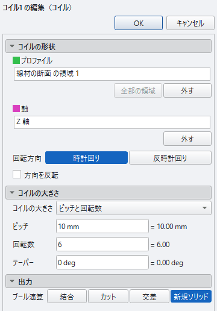

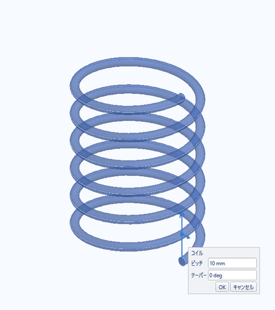
| ［コイルの大きさ］ | 入力する欄 |
|---|---|
| ［ピッチと回転数］（既定） | ［ピッチ］・［回転数］ |
| ［回転数と高さ］ | ［回転数］・［高さ］ |
| ［ピッチと高さ］ | ［ピッチ］・［高さ］ |
［回転数］には、5.5 のような小数も入力できます。［テーパー］に正の角度を入れると、半径が軸に沿って大きくなる円錐のばねになります。

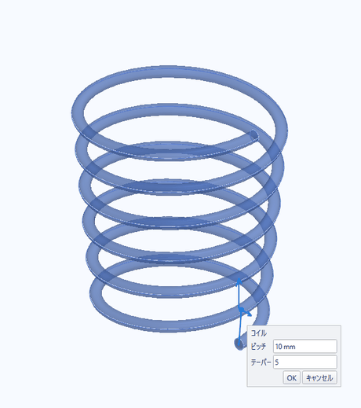

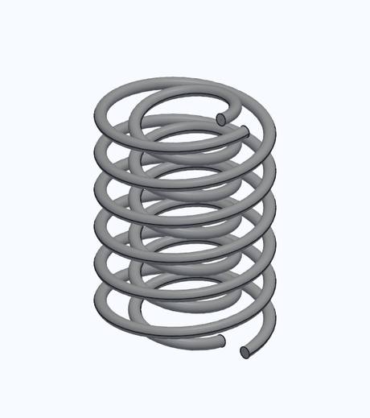
coil_spring.mcad）。外側が［コイル］、内側がヘリカル曲線のスイープです。| 表示される文 | 原因と直し方 |
|---|---|
| コイルが自分と交差しています: 断面の軸方向の幅（11.0 mm）がピッチ（10.0 mm）より大きくなっています | 線材が隣の巻きと重なります。ピッチを大きくするか、断面を小さくします。 |
| コイルの断面が軸をまたいでいます | 断面を軸の片側に描き直します。 |
| コイルの断面が軸に接しています | 断面を軸から離します。 |

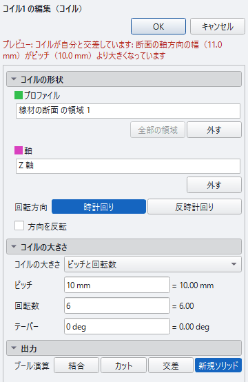
長方形などの形に巻く
電磁石のように、長方形のコアに線材を巻くときは、［巻き方］を［スケッチの輪郭］にします。線材の中心が通る道すじを、軸に垂直な平面に描いた閉じた輪郭（長方形・角丸長方形・スロット・円弧と線の組み合わせ・スプライン）で決めます。線材は、1 周ごとに［ピッチ］だけ軸の向きへ上がりながら、輪郭に沿って巻かれます。
コアの軸に垂直な平面（例: XY 平面）に、閉じた輪郭を描きます。輪郭は線材の中心の通り道です。コアの面から、線材の太さの半分だけ外に離します。
リボンの［スケッチ］タブ → ［作成］パネル → ［フィレット］の▼ → ［フィレット］で、輪郭の角を丸めます。断面の中心を輪郭の上に置くときは、尖った角のある輪郭には巻けません。角の半径は、断面の半分より大きくします（コアの角が丸いときは、コアの半径に線材の太さの半分を足した値です）。断面を輪郭から外へ離して巻くときは、尖った角のままでも巻けます（尖った角のコアに巻く）。
軸を含む平面（例: XZ 平面）に、線材の断面を描きます。断面の中心は輪郭の辺の上に置くか、そこから離した所に置きます（離れていれば、輪郭を平行にずらして巻きます）。断面の平面は、断面の中心に最も近い輪郭の点で、輪郭に垂直になるようにします。輪郭の辺が Y 軸に平行なら、XZ 平面が垂直です。
リボンの［3D モデル］タブ → ［作成］パネル → ［コイル］の▼ → ［コイル］をクリックし、［プロファイル］に断面を選びます。
［巻き方］を［スケッチの輪郭］にします。［軸］の欄が隠れ、［輪郭の選び方］と［輪郭］の欄が出ます。［輪郭の選び方］が［領域］（既定）のときは、ビューで輪郭の内側をクリックして、輪郭の領域を選びます。領域の外周が輪郭になります。輪郭の内側にほかの曲線（コアの穴の円など）があって領域に穴があいていても、穴は無視します。ほかの曲線が輪郭を横切って領域が分かれているときは、曲線で選びます。軸は、輪郭の平面の法線になります（［方向を反転］で逆向きです）。
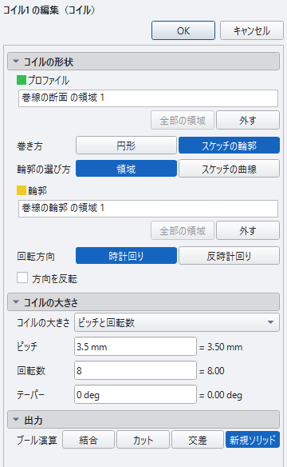
図 7-20 巻き方がスケッチの輪郭のコイルのフォーム。軸の代わりに輪郭の選び方と輪郭の欄があります。 ピッチと回転数（または高さ）、［回転方向］を決めて、［OK］で確定します。［回転方向］が［時計回り］（既定）のときは、巻き始めから軸の向きを見て時計回りに輪郭をたどる右ねじです。［反時計回り］は左ねじです。


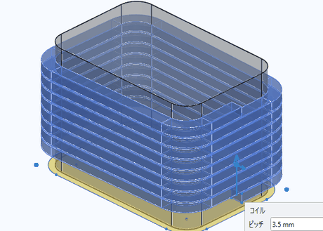

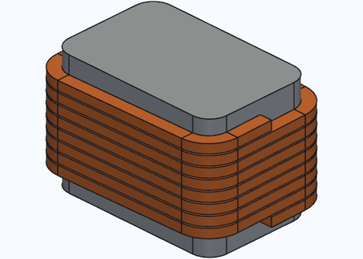
rect_coil.mcad）。コア（鋼）に長方形の断面の巻線（銅）を 8 回巻いています。巻き始めは、断面の中心に最も近い輪郭の点です。断面は、軸を含む平面に立ったまま輪郭に沿って運ばれます。ピッチの分だけ傾けたり、巻くごとにねじれたりしません。［テーパー］が 0 で断面の中心が輪郭の上のときの体積は、断面積 × 輪郭の周長 × 回転数です。
上へ行くほど広げる（テーパー）。パルストランスの高圧巻線のように、高電圧側の口径を大きくとるときは、［テーパー］に角度を入れます。巻き始めからの高さ z の所で、輪郭を外向き（輪郭が囲む領域の外）に z × tan（角度）だけ一様に動かした線の上を巻きます。正の角度は広がり、負の角度は狭まります。直線の部分は平行に外へ移り、長さは変わりません。角の円弧は、半径が（輪郭の角の半径 ± z × tan（角度））になります。ピッチは 1 周ごとに変わりません。

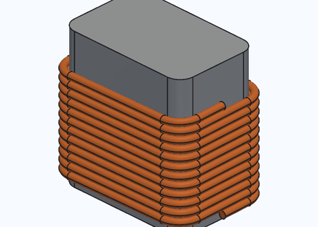
pulse_transformer_coil.mcad）。輪郭と同じ大きさで上へ巻かれます。
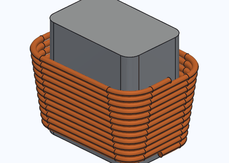
コイルのフォームの［テーパー］に、広げたい角度（例:
8）を入れます。ビューにテーパーのハンドルも出ます。軸の向きから輪郭の外向きへ倒す円弧で、ドラッグでも変えられます。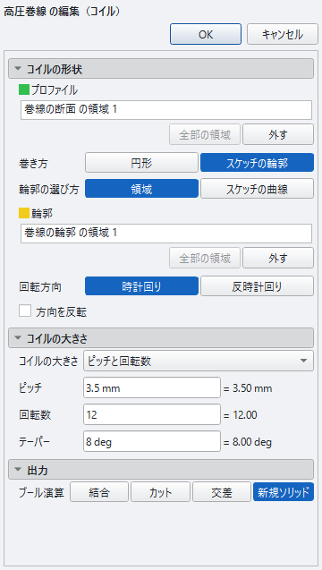
図 7-25 テーパーを 8° にした［高圧巻線］のフォーム。［テーパー］の欄があります。 断面の中心が輪郭の上なら、巻き始めの高さでは輪郭と同じ大きさで、そこから上へ行くほど広がります。輪郭から離した断面では、離した距離にテーパーの分を足してずらします（コイルを輪郭から離して巻く）。

体積は、高さ z の所の輪郭の周長（周長 + 2π × z × tan（角度））を高さで足し合わせた値の、断面積倍です。整数の回転数なら、断面積 × 回転数 ×（周長 + π × tan（角度）× 高さ）です。pulse_transformer_coil.mcadでは、周長 186.3 mm・高さ 42 mm・8° で、テーパー 0 の 15 799.6 mm³ が 17 372.5 mm³ になります。
次のときは、巻く前に調べて誤りにします。
角の円弧の半径が、線材の断面の張り出し（曲がりの中心の側）以下になるところまで狭まると、巻線が自分と重なります。負の角度、または凹んだ角で広げるときに起こります。どの角・どの高さかが出ます。
細い首のある輪郭を狭めて、動かした輪郭が自分と交わるときも誤りです。
直線と角のつなぎ目では、巻線がわずかに折れます（角の部分の巻線の長さが、動かした分だけ変わるため）。折れが 0.5° 以上になると誤りです（掃引が正しいソリッドになりません）。広げるときは、tan（角度）× ピッチ ÷ 周長 が 0.0087 より小さければ起こりません（周長 150 mm・ピッチ 5 mm なら 14.6° まで）。それより急なときと、狭めて角の半径が小さくなるときは、高さが大きくなると起こります。
テーパーは −89° より大きく、89° より小さくします。
| 表示される文 | 原因と直し方 |
|---|---|
| 輪郭に尖った角が 4 か所あります（最初の角は (30, -20, 0) mm）。尖った角が自動で丸められるのは、断面を輪郭から角の外側（凸の角では輪郭の外、凹んだ角では輪郭の内）へ離して置いたときだけです。そうでなければ、スケッチでフィレットを付けて丸めてください（角の半径は断面の半分の大きさより大きくします） | 輪郭の角が尖っていて、断面の中心が輪郭の上（または角の内側）にあります。スケッチでフィレットを付けるか、断面を輪郭から角の外へ離します（尖った角のコアに巻く）。L 字の輪郭のように凹んだ尖った角があると、外へ離しても凹んだ角は丸められないので、その角にフィレットを付けます。 |
| (20.0, 15.0, 0.0) mm の輪郭の尖った角は、断面の輪郭からの距離（1.0 mm）を半径にして丸めますが、それが断面の角の側の張り出し（2.0 mm）以下なので、巻線が自分と交わります。断面を輪郭からもっと離すか、スケッチで角にフィレットを付けてください | 尖った角を回る円弧の半径（断面の中心と輪郭の距離）が、線材の半分より小さくなっています。断面を輪郭からもっと離すか、スケッチで角にフィレットを付けます。 |
| 断面が (20.0, 15.0, 0.0) mm の輪郭の尖った角の斜め外にあります（断面の中心に最も近い輪郭の点が角そのものです）。これでは巻き始めが決まりません。断面は輪郭の直線か曲線の部分の横に、輪郭に垂直に置いてください | 断面の中心が、尖った角の斜め外（どちらの辺の真横でもない所）にあります。断面を辺の真横（辺の法線の上）へ動かします。 |
| スイープが自分と交差しています: パスの全長の 1.2 % の位置で、断面がパスの曲げの半径より大きくなっています | 角の半径が断面より小さいので、線材の内側が角でつぶれます。角の半径を大きくするか、断面を小さくします。 |
| (27.657, -17.657, 0.0) mm 付近の輪郭の角（半径 8.0 mm）が、輪郭から 6.5 mm 離れた断面に対して小さすぎます。そこで巻線の曲がりの半径が 1.5 mm になり、断面の張り出し（2.0 mm）以下なので、巻線が自分と交わります。断面を輪郭に近づけるか、角の半径を大きくしてください | 輪郭から離れた断面のために輪郭をずらすと、角の半径が線材より小さくなります。断面を輪郭に近づけるか、スケッチで角の半径を大きくします。 |
| 断面が輪郭から 5.2 mm 離れていて、輪郭をその距離だけ動かすと自分と交わります。輪郭が細すぎるか、凹んだ部分が狭すぎます。断面を輪郭に近づけてください | 細い輪郭を内へずらすと、ずらした輪郭が自分と交わります。断面を輪郭に近づけます。 |
| 輪郭の曲線がループを閉じていません（端が 11.314 mm 離れています）。1 つの閉じたループの曲線を全部選んでください | ［輪郭の曲線］の欄に、ループの曲線が足りません。残りの曲線をクリックします。 |
| チェーンが分岐しています | ［輪郭の曲線］の欄に、ループの角から出る別の曲線が入っています。その曲線をクリックして外します。 |
| 輪郭の曲線が互いに交わっています。自分と交わらない 1 つのループの曲線を選んでください | 選んだ曲線が 8 の字のように交わっています。1 つのループになる曲線だけを選びます。 |
| コイルの断面は、軸を含む平面（輪郭の平面に垂直な平面）に描いてください | 断面を、輪郭の平面に平行な平面に描いています。軸（輪郭の平面の法線）を含む平面に描き直します。 |
| コイルの断面は、始点で輪郭に垂直にしてください（30 度ずれています）。輪郭に垂直な平面に描いてください | 断面の平面が、巻き始めの輪郭の辺に垂直ではありません。辺に垂直な平面（作業平面）に描き直します。 |
| コイルが自分と交差しています: 断面の軸方向の幅（4.0 mm）がピッチ（3.5 mm）より大きくなっています | 線材が隣の巻きと重なります。ピッチを大きくするか、断面の軸方向の幅を小さくします。 |
| (27.657, -17.657, 0.0) mm 付近の輪郭の角（半径 8.0 mm）が、断面に対して小さすぎます。巻き始めから 31.038 mm 上がった所から、巻線の曲がりの半径が断面の張り出し（1.5 mm）以下になり、巻線が自分と交わります。テーパーか高さを小さくするか、角の半径を大きくしてください | 狭めるテーパーで、角の半径が線材より小さくなります。テーパーか高さを小さくするか、スケッチで角の半径を大きくします。 |
| テーパーがピッチと輪郭に対して急すぎます。(-40.09, 12.0, 15.025) mm の、直線部と角のつなぎ目で巻線が 0.504 度折れます（上限は 0.5 度）。テーパーかピッチを小さくするか、輪郭の角の半径を大きくしてください | 直線と角のつなぎ目で巻線が折れすぎます。テーパーかピッチを小さくするか、角の半径を大きくします。 |
| テーパーのせいで、輪郭が自分と交わります（巻き始めから 40.0 mm 上がった所で、輪郭から 5.2 mm 動きます）。輪郭が細すぎるか、凹んだ部分がこのテーパーに対して狭すぎます。テーパーか高さを小さくしてください | 動かした輪郭が自分と交わります（細い首など）。テーパーか高さを小さくします。 |
| 輪郭の領域を 1 つだけ選んでください | 輪郭には、閉じた領域を 1 つだけ選びます。領域が 2 つ以上あるときは、必要な 1 つにします。 |

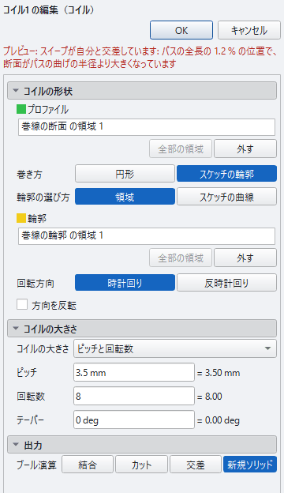
コイルの輪郭の曲線を選ぶ（投影したジオメトリ）
コアの断面をリボンの［スケッチ］タブ → ［作成］パネル → ［投影］の▼ → ［ジオメトリを投影］でスケッチに投影すると、ほかの投影した曲線（線材の断面・別の部品の外形など）もスケッチに入り、輪郭を横切ったり、輪郭に重なったりします。このときは輪郭の内側が 1 つの領域にならないので、［輪郭の選び方］を［スケッチの曲線］にして、輪郭の曲線を選びます。選んだ曲線だけを使い、スケッチのほかの曲線は無視します。
［輪郭の選び方］の［スケッチの曲線］を押します。［輪郭］の欄の代わりに［輪郭の曲線］の欄が出ます。
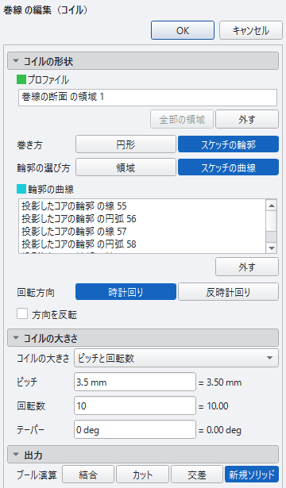
図 7-27 輪郭の選び方がスケッチの曲線のコイルのフォーム（ projected_core_coil.mcad）。輪郭の曲線の欄に、投影したループの 8 本が入っています。ビューで、輪郭のループの曲線を 1 本クリックします。端点でつながる曲線が一通りに決まれば（ループの角から別の曲線が出ていなければ）、ループ全体が入ります。投影した曲線は一致の拘束を持たないので、端点の位置が一致するか（0.000001 mm 以内）でつながりを見ます。輪郭を横切る曲線・輪郭の途中に触れる曲線は、つながりに数えません。
ループの角から別の曲線が出ていて決められないときは、クリックした 1 本だけが入ります。残りの曲線を 1 本ずつクリックして、閉じたループにします。入っている曲線をクリックすると、その 1 本だけが外れます。


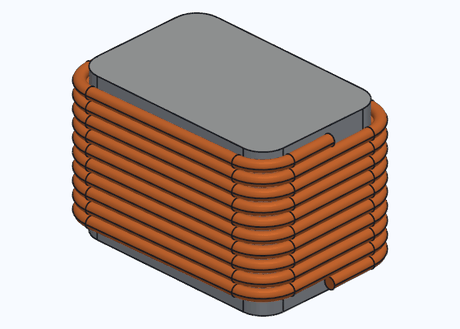
projected_core_coil.mcad）。投影したスケッチには、コアを横切る線と、辺に重なる円もあります。選んだ曲線は、端点でつながって閉じ、軸に垂直な 1 つの平面の上にあり、自分と交わらないループにします。角は、領域のときと同じく、断面の中心が輪郭の上ならフィレットで丸めます（断面を角の外へ離せば、尖った角のままで巻けます。尖った角のコアに巻く）。側面の名前は選んだスケッチの曲線から作るので、あとでほかの曲線をスケッチに描き足しても、巻線への参照は変わりません。
コイルを輪郭から離して巻く
断面の中心が輪郭の上にないときは、輪郭を基準の形にして、断面を描いた位置のまま巻きます。断面の中心から輪郭までの距離 d だけ、輪郭を外（断面が輪郭の外のとき）か内（内のとき）へ平行にずらした線の上を巻きます。直線の部分は平行に移り、角の円弧は半径が（輪郭の角の半径 ± d）になります。投影したコアの断面を輪郭にして、コアから隙間をあけて巻くときに使います（断面の中心を、コアの面から 隙間 + 線材の半径 だけ離します）。
体積は、断面積 × ずらした輪郭の周長 × 回転数です。角を丸めた凸の輪郭なら、ずらした輪郭の周長は 周長 + 2π × d（内なら d は負）です。projected_core_coil.mcadでは、コアの周長 173.7 mm・d = 2 mm・φ3・10 回転で 13 166.3 mm³ です。［テーパー］と組み合わせると、ずらす量は d + z × tan（角度）になります。
ずらした線の角の半径が、線材の断面の張り出し（曲がりの中心の側）以下になるとき（内へずらして凸の角が小さくなる・外へずらして凹んだ角が小さくなる）と、ずらした輪郭が自分と交わるとき（細い輪郭を内へずらす）は、巻く前に誤りにします。断面を輪郭に近づけるか、角の半径を大きくします。
尖った角のコアに巻く
投影したコアの断面が、角の尖った長方形のこともあります。このときも、断面の中心を輪郭から外へ離して置けば、尖った角のまま巻けます。巻線は、辺の部分では輪郭を距離 d だけ平行にずらした線の上を通り、尖った角では、角の頂点を中心にした半径 d の円弧で角を回ります（角の半径が 0 の輪郭を d だけずらした形です）。スケッチでフィレットを付ける必要はありません。
軸に垂直な平面のスケッチに、リボンの［スケッチ］タブ → ［作成］パネル → ［投影］の▼ → ［ジオメトリを投影］でコアの断面（例: 角の尖った箱の下面）を投影します。
軸を含む平面に、線材の断面を描きます。断面の中心は、コアの辺の真横（辺の法線の上）に、コアの面から 隙間 + 線材の半分 だけ離して置きます。
リボンの［3D モデル］タブ → ［作成］パネル → ［コイル］の▼ → ［コイル］で［巻き方］を［スケッチの輪郭］、［輪郭の選び方］を［スケッチの曲線］にして、投影した辺を 1 本クリックします（ループ全体が入ります）。［輪郭の選び方］が［領域］でも、コアの断面の内側をクリックすれば同じです。

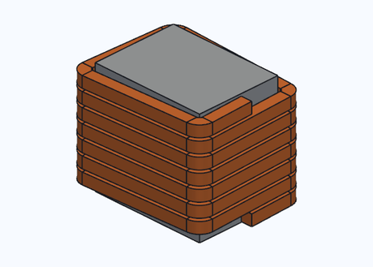
sharp_core_coil.mcad）。巻線は、コアの角の頂点を中心にした円弧で角を回ります。角を回る円弧の間は、巻線は上がりません。上がるのは辺の部分だけで、1 周でちょうど［ピッチ］だけ上がります（ピッチ・回転数の意味は角を丸めた輪郭と同じです）。体積は 断面積 × （周長 + 2π × d）× 回転数です。sharp_core_coil.mcadでは、40 × 30 の尖ったコア・4 × 4 の角線・d = 3 mm（隙間 1 mm）・7 回転で 16 ×（140 + 6π）× 7 ≒ 17 791.2 mm³ です。
次のときは、巻く前に誤りにします。
断面の中心が輪郭の上にあるとき・輪郭の内側にあるとき。尖った角を自動で丸めるのは、断面が角の外側（凸の角では輪郭の外、凹んだ角では輪郭の内）に離れているときだけです。L 字のように凹んだ尖った角のある輪郭を外へ離すと、凹んだ角は丸められないので誤りです（その角にスケッチでフィレットを付けます）。
角を回る円弧の半径 d（断面の中心と輪郭の距離）が、線材の断面の角の側の張り出し（4 × 4 の角線なら 2 mm）以下のとき。断面をもっと離します。
断面の中心が、尖った角の斜め外（どちらの辺の真横でもない所）にあるとき。巻き始めが決まらないので、辺の真横へ動かします。
［テーパー］と組み合わせると、辺と角の円弧のつなぎ目で巻線が tan（角度）× ピッチ ÷ 周長 の角度だけ折れます。0.5° を超えると誤りです（周長 140 mm・ピッチ 10 mm なら約 7° まで）。より急なテーパーにするときは、角にフィレットを付けます。
7.4 ヘリカル曲線
らせん状の曲線を作ります。体積のない曲線（ワイヤ ボディ）で、スイープのパスや、曲線に垂直な作業平面の基準に使います。
作業点を、らせんの始まりの位置に作ります（第 5 章）。軸からの距離が、らせんの半径になります。
リボンの［3D モデル］タブ → ［作成］パネル → ［コイル］の▼ → ［ヘリカル曲線］をクリックします。
［軸］に軸を、［始点］に作業点（頂点・スケッチの点・UCS も選べます）を選びます。
［コイルの大きさ］・［ピッチ］・［回転数］・［高さ］・［テーパー］・［回転方向］は、コイルと同じです。［OK］で確定します。

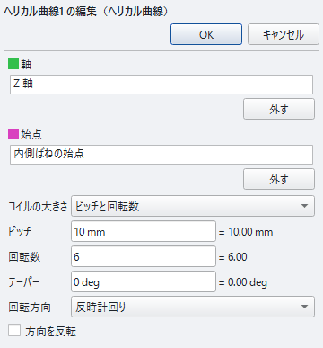

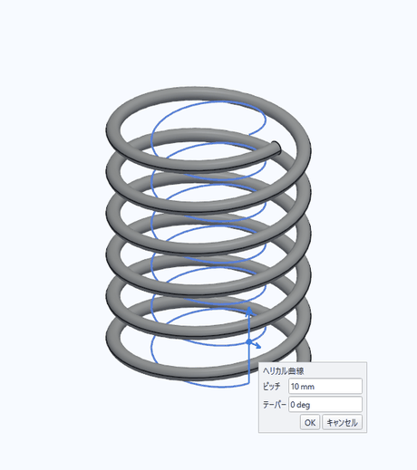
ブラウザの［ワイヤ ボディ］に、曲線が入ります。ヘリカル曲線のフィーチャを選んで、行頭のチェックを入れると、曲線が見えます。
ヘリカル曲線をパスにしたスイープでばねを作る流れです。
始点の作業点と、ヘリカル曲線を作ります。
リボンの［3D モデル］タブ →［作業フィーチャ］パネル →［平面］▼ の［点上で曲線に垂直］で、曲線の始点でパスに垂直な作業平面を作ります。
その平面に、線材の断面（円）を描きます。
リボンの［3D モデル］タブ → ［作成］パネル → ［スイープ］で、［パスの元］を［エッジ］にして、ヘリカル曲線を選びます。
| 表示される文 | 原因と直し方 |
|---|---|
| ヘリカル曲線の始点が軸の上にあります | 始点を軸から離します（離した距離が半径です）。 |
| ヘリカル曲線のテーパー角は 89 度より小さくしてください | ［テーパー］を小さくします。 |
| テーパーのため、ヘリカル曲線の半径が終わりより前にゼロになります | ［テーパー］の角度を小さくするか、［高さ］を短くします。 |
7.5 ねじ
円筒面にコスメティックねじ（ねじの印）を付けます。形（ソリッド）は変えません。ビューにらせん状の線と終わりの輪で、ねじの範囲を示します。穴の壁と軸の外周に付けられます。穴の作成の中で付けるタップ穴は、第 6 章の穴にあります。
リボンの［3D モデル］タブ → ［修正］パネル → ［ねじ］をクリックします。
ビューで、ねじを付ける円筒面（穴の壁か軸の側面）をクリックします。［面］に入ります。
［規格］で、［ねじの種類］・［指定］・［等級］・［方向］を選びます。［ねじの種類］は、メートル並目・メートル細目・管用平行ねじ G・管用テーパねじ Rc です。サイズの選択肢は、穴と同じです（第 6 章）。
［全ねじ］にチェックを入れると、面の全長に付きます。外すと、［ねじの深さ］が出ます。
［位置］の［オフセット］で、面の端からのずらしを指定します。［方向を反転］で、ねじの始まりを反対の端にできます。
［OK］で確定します。ねじの線は、確定したあとに出ます。

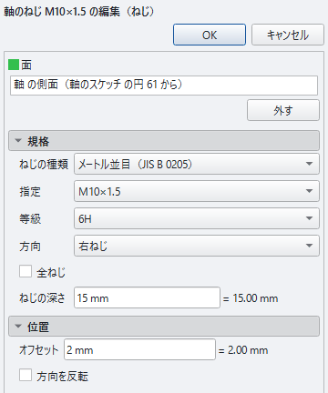

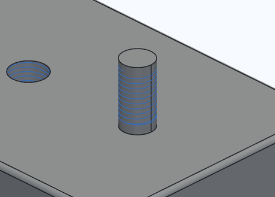
| 表示される文 | 原因と直し方 |
|---|---|
| ねじの長さ 19.0 mm が面の残り（18.0 mm）より長くなっています | 面の長さからオフセットを引いた長さが、ねじの深さより短いです。［ねじの深さ］かオフセットを小さくします。 |
| ねじには円筒面が必要です（穴の壁または軸の外側） | 円筒でない面を選んでいます。円筒面を選びます。 |
7.6 パターン（矩形状・円形状・スケッチ駆動）
フィーチャやソリッドを、規則的に並べて複製します。複製された形を「オカレンス」と呼びます。元になるフィーチャを「シード」と呼びます。同じ穴を並べるときなどに使います。
3 つのパターンは、共通の欄を持ちます。
| 欄 | 意味 |
|---|---|
| ［パターンの種類］ | ［フィーチャを個別にパターン］は、選んだフィーチャの形を並べます。［ソリッドをパターン］は、ボディ全体を並べます。 |
| ［フィーチャ］ | 並べるフィーチャです。ブラウザの行か、ビューのフィーチャの面をクリックして選びます。続けて複数選べます。 |
| ［ソリッド］ | ソリッドをパターンするとき、並べるボディです。 |
| ［省略したオカレンス］ | 作らないオカレンスです。ビューの点をクリックして切り替えます。 |
| ［作成方法］（［詳細］の中） | ［同一］は、シードの結果をそのまま複製します。［調整］は、オカレンスごとにフィーチャの範囲（貫通・次へなど）を計算し直します。遅くなります。 |
| ［ソリッド演算］ | ソリッドをパターンするとき、［結合］か［新規ボディを作成］を選びます。 |
並べられるのは、スケッチから作ったフィーチャ（押し出し・回転・スイープ・ロフト・コイル・リブなど）と穴です。フィレット・面取り・作業フィーチャはシードにできません。パターンのパターン、パターンのミラーはできます。
矩形状パターン
1 方向か 2 方向に、等間隔に並べます。
リボンの［3D モデル］タブ → ［パターン］パネル → ［矩形状パターン］をクリックします。
ブラウザの穴など、並べるフィーチャをクリックします。［フィーチャ］に入ります。
［方向 1］の欄をクリックし、方向にする軸・エッジ・スケッチの線を選びます（例: ブラウザの［原点］の［X 軸］）。
［個数］・［長さ］・［長さの種類］を入力します。ビューにプレビューが出て、矢印のハンドルで長さを変えられます。
2 方向に並べるときは、［方向 2］も同じように指定します。［OK］で確定します。
| 欄 | 意味 |
|---|---|
| ［反転］ | 方向を逆にします。 |
| ［個数］ | シードを含む個数です（1〜5000）。 |
| ［長さ］ | ［長さの種類］で意味が変わります。 |
| ［長さの種類］ | ［間隔］は、隣り合うオカレンスの間隔です。［距離］は、最初から最後までの全体の長さです。 |
| ［中間平面］ | シードを中心に、両側へ並べます。偶数個の余りは、正の側です（［反転］で負の側）。 |

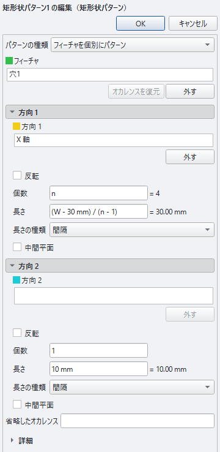
n、［長さ］に式を入れています。
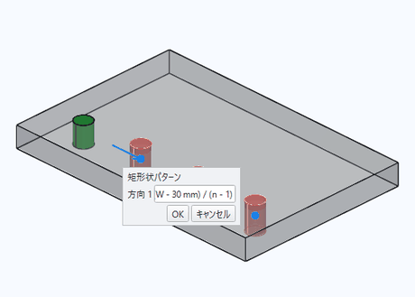
方向 2 の［個数］は、既定が 1（並べない）です。2 以上にすると、格子状に並びます。方向 1 だけ指定すれば、1 列の並びです。
円形状パターン
軸のまわりに、円に沿って並べます。
リボンの［3D モデル］タブ → ［パターン］パネル → ［円形状パターン］をクリックします。
並べるフィーチャをクリックします。
［回転軸］に、軸を選びます。作業軸・直線のエッジ・スケッチの線のほか、円筒の面（その軸）も選べます。
［個数］と［角度］を入力します。円弧のハンドルをドラッグしても、角度を変えられます。［OK］で確定します。
| 欄 | 意味 |
|---|---|
| ［反転］ | 回る向きを逆にします。 |
| ［個数］・［角度］ | シードを含む個数と、並べる角度です（既定は 6 個・360°）。 |
| ［中間平面］ | シードを中心に、両側へ並べます。 |
| ［配置方法］ | ［フィット］は、［角度］の中に［個数］を収めます（360° のときは等分）。［増分］は、［角度］を隣り合うオカレンスの間の角度にします。 |
| ［向き］ | ［回転］は、オカレンスの向きも軸のまわりに回します。［固定］は、向きを変えずに位置だけを回します。 |

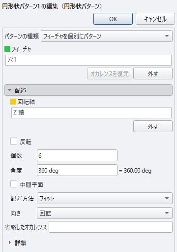

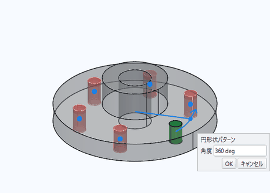

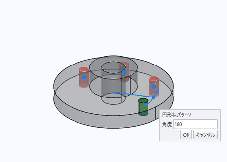

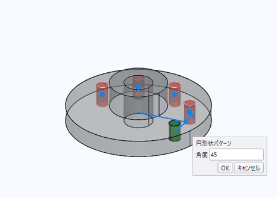
スケッチ駆動パターン
スケッチの点の位置に、シードを複製します。不規則な位置に同じ穴を開けるときに使います。
複製する位置に点を置いた、スケッチを描きます。
リボンの［3D モデル］タブ → ［パターン］パネル → ［スケッチ駆動パターン］をクリックし、並べるフィーチャをクリックします。
［スケッチの点］の欄をクリックし、ビューで点をクリックします。ブラウザでスケッチを選ぶと、そのスケッチの全部の点が入ります。
［基準点］は省けます。省くと、シードの外接箱の中心を、点のスケッチの平面に投影した点（穴は穴の中心）を基準に、各点へ移します。
［OK］で確定します。

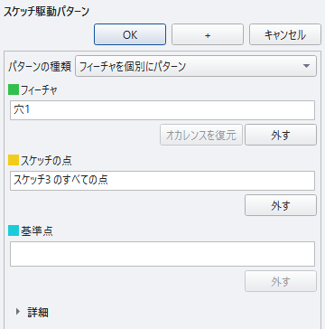

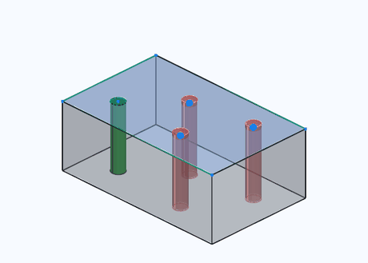
基準点と同じ位置の点には、複製を作りません（シード自身です）。点を足したり消したりしても、ほかの点のオカレンスはそのまま付いてきます。
オカレンスの省略・個数にパラメータ
編集の間、ビューの各オカレンスの位置に、小さな点が出ます。作る点は青、省略した点は赤です。点をクリックすると、そのオカレンスを省略します。もう一度クリックすると、また作ります。省略した全部を一度に戻すには、［オカレンスを復元］を押します。省略したオカレンスが 1 つも無いときは、このボタンは灰色です。点をクリックして省略すると、すぐに押せるようになります。

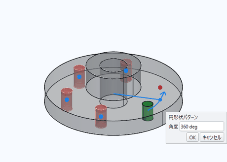

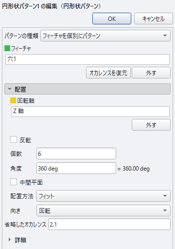
2.1）が入り、［オカレンスを復元］が押せるようになります。ブラウザに、オカレンスごとの行はありません。省略は、ビューの点と、この欄で行います。
［個数］の欄は、数のほかに、式とパラメータの名前（n・n + 1）も入力できます。名前を付けた整数のパラメータ（第 10 章）を入れておくと、パラメータの表や構成（第 11 章）で、個数を変えられます。個数は 1 から 5000 の整数です。

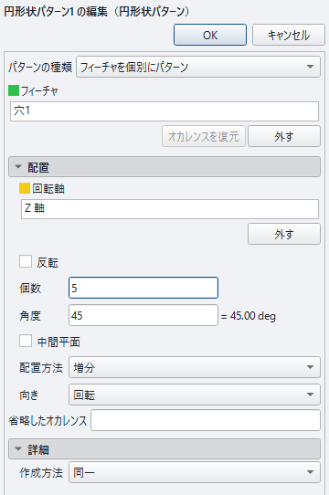
| 表示される文 | 原因と直し方 |
|---|---|
| 作成するオカレンスがありません（個数が 1 か、すべてのオカレンスが省略されています） | ［個数］を 2 以上にするか、省略したオカレンスを復元します。個数にパラメータを使っているときは、値が 1 になっていないか確かめます。 |
| 一部のオカレンスはボディに触れていません。結果は 2 個の別々のソリッドになります | 警告です。間隔が大きく、オカレンスがボディから離れています。間隔を小さくします。 |
| パターンでオカレンスが … 個できてしまいます（上限は 5000 個） | 個数を減らします（2 方向のときは、個数 1 × 個数 2 が 5000 以下です）。 |
| オカレンス … は作成できないため飛ばします: … | 作成方法が［調整］のとき、一部のオカレンスで範囲を計算できませんでした。警告です。ほかのオカレンスも、そろえて省かれます。［同一］に戻すか、配置を変えます。 |
| 選んだフィーチャはどれもパターン化できません | フィレット・面取り・作業フィーチャなどを選んでいます。穴・押し出しなどのフィーチャを選びます。 |
7.7 ミラー
平面を対称面にして、フィーチャやソリッドを反対側へ複製します。左右対称の部品の半分だけを作って、ミラーで完成できます。
リボンの［3D モデル］タブ → ［パターン］パネル → ［ミラー］をクリックします。
［パターンの種類］を選びます。［フィーチャを個別にミラー］は、選んだフィーチャの形を反対側にも作ります。［ソリッドをミラー］は、ボディ全体を反対側へ複製します。
［フィーチャ］（またはボディの［ソリッド］）を選びます。ソリッドをミラーするときに［ソリッド］を空のままにすると、ボディが 1 つなら、そのボディです。
［ミラー平面］に、対称面にする面か作業平面を選びます。
［OK］で確定します。

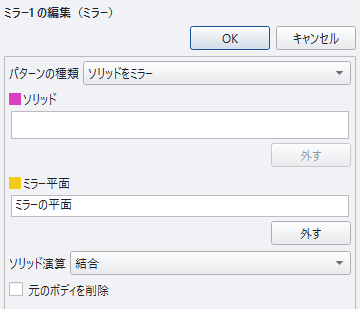

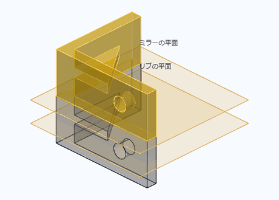
| 欄 | 意味 |
|---|---|
| ［ソリッド演算］ | ［結合］は、元のボディに足して 1 つにします。［新規ソリッド］は、別のボディにします。 |
| ［元のボディを削除］ | ソリッドをミラーするとき、元のボディを消して、反対側の複製だけを残します。 |
| ［作成方法］（［詳細］の中） | パターンと同じです（［同一］・［調整］）。 |

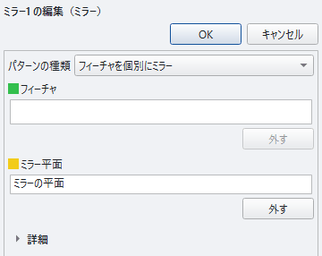
7.8 次に読む章
押し出し・回転・穴・フィレットなどの基本のフィーチャ: 第 6 章 フィーチャ（押し出し・回転・穴・フィレットなど）
結合・分割・ボディの移動: 第 8 章 ボディの操作
個数や寸法をパラメータで結ぶ: 第 10 章 パラメータと式